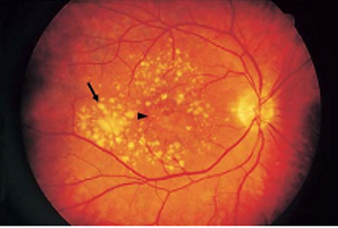
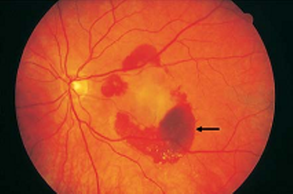

Age-related macular degeneration (AMD)
* Định nghĩa:
+ Thoái hóa hoàng điểm liên quan đến tuổi
+ Đồng nghĩa: Senile Mmacular Degeneration: thoái hóa hoàng điểm tuổi già
* Đặc điểm:
+ AMD là bệnh lý của vùng hoàng điểm, về lâm sàng hầu như xảy ra sau 50 tuổi với những dấu hiệu ở giai đoạn sớm và muộn
- Sớm:
Những điểm màu vàng riêng rẽ ở hoàng điểm (gọi là Drusen)
Tăng sắc tố của lớp biểu mô sắc tố võng mạc
Những vùng ranh giới rõ của mất sắc tố của biểu mô sắc tố võng mạc

Hình: Những drusen quanh vùng hoàng điểm
- Muộn:
Teo biểu mô sắc tố võng mạc dạng bản đồ thấy được những mạch máu hắc mạc bên dưới
Bong biểu mô sắc tố có hoặc không có bong lớp võng mạc thần kinh
Tân mạch dưới võng mạc hoặc dưới biểu mô sắc tố võng mạc
Mô xơ sẹo, xuất huyết và xuất tiết

Hình: Xuất huyết võng mạc trong thể AMD ướt
+ AMD có hai thể:
- Thể teo (khô, không xuất tiết), có số lượng nhiều thường gặp, bệnh tiến triển chậm đặc trưng bởi thể teo dạng drusen và bản đồ của biểu mô sắc tố võng mạc.
- Thể xuất tiết (thể ướt, tân mạch), ít gặp hơn nhưng nghiêm trọng, đặc trưng bởi tân mạch hắc mạc (Choroidal Neovascularization CNV) và cuối cùng là hình thành sẹo dưới võng mạc.
+ DRUSEN
- Mô bệnh học: Mất thị giác trung tâm trong AMD là hậu quả của những thay đổi xảy ra đối với sự lắng đọng những chất khác thường ở màng Bruch. Những chất này được sinh ra từ lớp biểu mô sắc tố võng mạc, và sự tích tụ này được cho là do sai sót trong việc làm sạch những mảnh vụn thải ra từ vùng này. Drusen bao gồm những lắng đọng riêng rẽ từ vật liệu bất thường này, nó nằm giữa màng đáy của biểu mô sắc tố võng mạc và lớp collagen trong của màng Bruch. Chất này cũng tích tụ lan tỏa xuyên qua màng Bruch. Việc dày lên ở lớp trong màng Bruch được kết hợp bởi sản phẩm thừa của chất giống màng cơ bản gần biểu mô sắc tố võng mạc.
Hình: Biến đổi màng Bruch và vị trí của Drusen
- Triệu chứng: drusen xuất hiện như những cục màu vàng không được để ý ở biểu mô sắc tố võng mạc, phân bố rãi rác đồng đều ở cực sau của hai mắt. Chúng có số lượng, kích thước, hình dạng, độ lồi và phạm vi liên quan đến những thay biểu mô sắc tố võng mạc khác nhau. Một vài bệnh nhân, drusen có thể tiếp giáp với vùng trung tâm hoàng điểm, trong khi đó những người khác những lắng đọng này bao xung quanh nhưng ít ở chính fovea. Về mặt lâm sàng, drusen hiếm khi được thấy ở độ tuổi dưới 45; không phổ biến từ 45 đến 60 tuổi và phổ biến hơn ở độ tuổi lớn hơn. Cùng với tuổi chúng gia tăng về kích thước và số lượng.
Hard Drusen: là những nốt nhỏ, tròn, riêng rẽ, màu trắng-vàng liên quan với loạn dưỡng tại chỗ của biểu mô sắc tố võng mạc và thường vô hại
Hình: Hard Drusen
Soft Drusen: lớn hơn, và có bờ không rõ ràng. Chúng có thể lan rộng chậm và hợp lại với nhau hình thành một dạng bong drusen khối của biểu mô sắc tố võng mạc, thấy rõ trên chụp mạch huỳnh quang. Xảy ra sự gộp lại với nhau soft drusen vùng hoàng điểm là một điều báo trước thường gặp của AMD thể teo và xuất tiết. Ở một số trường hợp drusen có thể bị canxi hóa thứ phát và xuất hiện dạng lấp lánh.
Hình: Soft Drusen
Hình: Canxi hóa Drusen